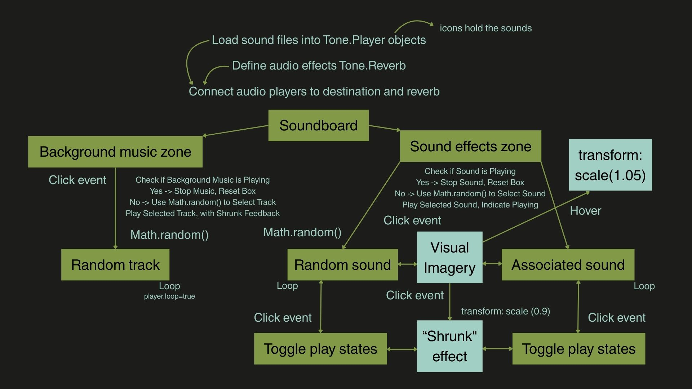
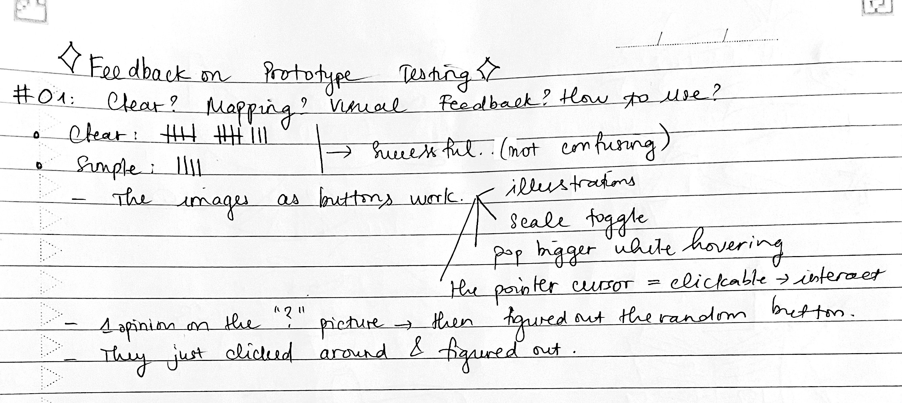
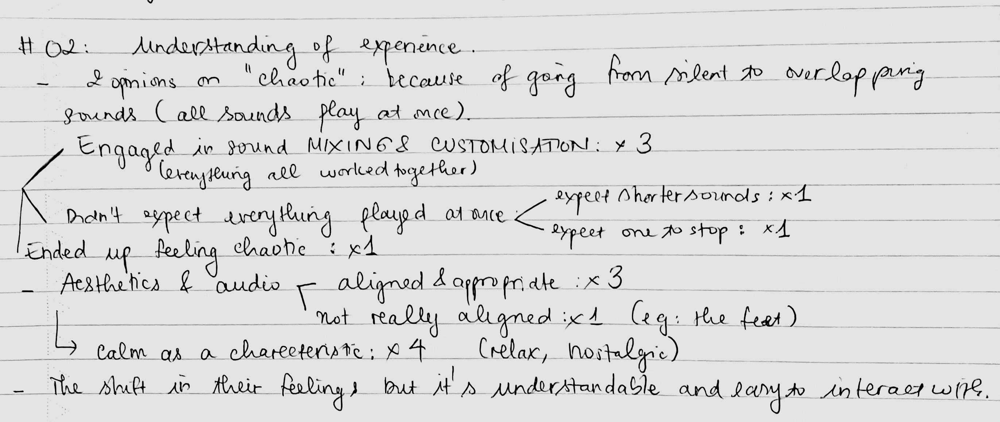
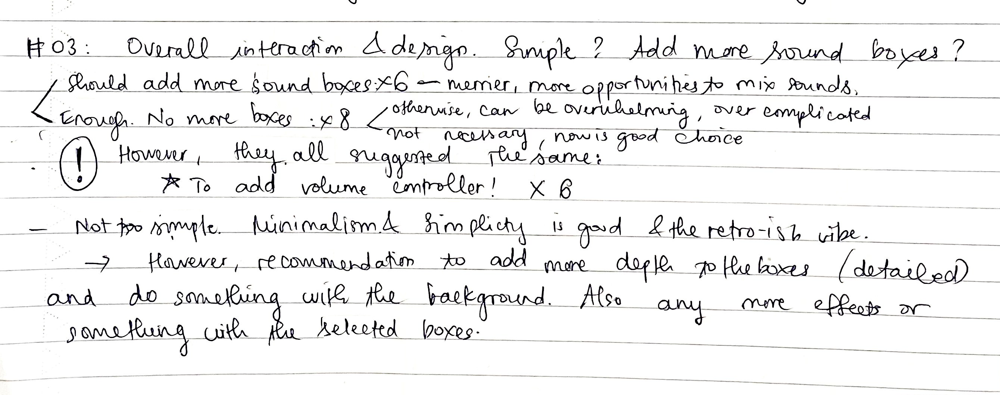

- Interface Design and Development -
MILESTONE PRESENTATION
✩ Conceptual Response
The UI is built responding to the creative prompt of ‘No text characters’ which encourages the use of icons. The use of colours and accompanying illustrations will be enhanced to highlight the functionalities while ensuring clear and cohesive visual feedback.
The project explores the blend of sound effects and background music, where the users can interact with a simple soundboard. The chosen prompt embraces the creation that brings in the breath of nature. The icons are aimed to clearly represent the sound effects they can mix in throughout the experience. The JavaScript method Math.random() is used to add dynamism and serves as an unpredictable element to the soundboard. It is a more engaging and playful way to play background music and fosters indulging in enjoyment instead of intentionally choosing one. Also, Math.random() is used to add a secret sound effect in the midst of nature ambience, evoking curiosity and imagination.
Designing the soundboard with No text characters prompt enhances the accessibility of the interface as users can play around with sounds through intuitive imagery. It also strongly supports and communicates the nature ambience as the main concept, making it associated and approachable. By using visual imagery and randomness, the soundboard creates an unexpected audiovisual experience that invites exploration and immersion.
✩ Visual Plan
✩ Design References
Add soundscapes to create ambience
Spirit City: Lo-Fi SessionDrag and Drop elements to mix sounds
IncrediboxCreate customisable soundscapes with nature sounds
myNoiseThese UIs helped shape my understanding of the interactive audio-based UIs. All three of them taught me how to emphasise the harmony in blending multiple audio clips to create a serene ambience and a rewarding audio experience.
Especially with Incredibox, I learnt how intriguing and amazing it can be to interact with lots of audio inputs at the same time. The drag and drop works really impressively, with unpredictable sounds to create unique soundscapes. Similarly, myNoise allows users to create auditory environments based on their choices and preferences for moods, music, and sound effects. It inspired me to consolidate the nature-grounded theme and let the users control their customisable natural soundscapes. My initial idea was drawn upon Spirit City: Lo-Fi Sessions, to create the UI to mix in sounds for study sessions in a game style (something calm and relaxing), so my orientation is still the peaceful ambience, but in a playful way. After iteration, I wanted to create something simpler and minimalist compared to that with illustrations as the key visuals, so the soundboard was my choice. The audio controller from myNoise would be a significant feature I can consider implementing to add depth to my immersive audio environment.
✩ Technical Approach
Using the Tone.js library, the soundboard can manage and manipulate the sound effects with music tracks for an interactive audiovisual experience. Primarily, Tone.js is used to handle soundtrack playback on loop with a reverb effect. This audio-based website is built on the nature theme, where users can click the visible objects to create a certain ambience. With the ‘No text characters’ prompt, to let the icons accompany the associated sounds, the sound files are loaded into Tone.player objects. Before that, I also edited the initial volume level of the sourced sound effects in Reaper. I created an effect by Tone.Reverb and then connected audio players to destination and reverb.
- HTML is for the structure of the soundboard elements.
- is for elements and layout styling, and visual feedback during interaction. I wanted to create the ‘shrunk’ effect for the icons/boxes for visual feedback to let the users know which sound is chosen/playing, and they can click on it again to return to the initial size and stop the audio. While hovering, the icons/boxes are also slightly enlarged to indicate that they are clickable.
- helps handle actions, utilising Tone.js for audio control and Math.random() as one of the advanced techniques to return a random soundtrack from the audio inputs.
When users click on the background music zone, Math.random() selects between input tracks to play a random song. The random sound box also integrated this method to play one of the secret sound effects. This method brings diversity and amazement to the project. When users click on the sound effects zone (each box with the attached ‘click’ event), the playback function is executed.
In addition, I’ve changed from utilising Date.now() to Math.random(). The initial idea was to alternate daytime and nighttime tracks, encouraging multiple visits. However, during iteration, I realised adding randomness can effectively add the richness of sounds and enhance user engagement within a one-time experience, especially for this user-friendly nature soundboard.
✩ System Map
✩ Reflection on Prototype Feedback
01. Was the feedback and mapping clear enough? How did it teach you how to use it?
Quick Summary:
It was nice to see everyone agreeing that the feedback was clear and the website was easy and simple to use. Because I created it so I could understand it anyway, but I was doubtful if it would be any confusing to the users in the way it only had images and they needed to figure out how to interact with it. The positive things were the images as buttons worked well, as I attempted and expected - how the illustrations conveyed and the visual feedback when hovering and clicking on.
There was one opinion wondering the meaning of the ‘?’ picture, then they realised it was a random button. What I’m considering to make it more understandable is illustrating the question mark with the music notes to indicate the randomness in sound effects.
02. How different was the end of your experience compared to your first impression/ expectation/ understanding of first seeing the interface?
Quick Summary:
As for the understanding and feeling of the experience, there were three key points I could delve deeper into:
#1 They acknowledged calmness as a characterisation of the website, regarding the aesthetics and audio.
→ As I’m creating a nature-themed soundboard, it was fulfilling to see the users feel the calmness in the aesthetics. However, they were the illustrations I sourced from the internet for testing purposes only. I didn’t really think about the visual cohesion and intention. So, it’s essential for me to keep up the calmness in my official drawings now. Moreover, one said it was a misunderstanding with the feet picture as it looked like an upbeat track, but not about the footstep sound. So, in my illustration, I consider adding some grass around the walking feet.
#2 Their expectation was shifted in overall feelings, but not about the difference in understanding.
→ This is good. Because to me, it means the interaction could bring something to them through the audiovisual experience, yet it was easy and cohesive to interact with.
#3 The viewpoints in mixing sounds: all worked together VS. one played at a time.
→ Some considered the fact that all the sound effects could play simultaneously with the music a good experience. Some considered it too chaotic. While one expected one sound would automatically stop when another one is selected, I think it would interrupt the experience. Because it’s an intention to mix your own ambience, and I want to associate it with the kind of mixed sounds in nature, which paves the way for me to consider adding echo. Similarly, one expected shorter sounds while I let them play on loop. Shorter sounds wouldn’t build a comprehensive experience. On the other hand, because the users are able to click to play and pause the sounds, it doesn’t make sense if it suddenly stops. Maybe I could consider adding echo, which brings more depth and avoids chaos. The soundboard is also created for mixing sounds into the desired ambience.
03. How did you feel with the overall interaction and design - was it too simple? Should I add more sound boxes?
Quick Summary:
I thought the UI was too simple and not enough, but they all considered the overall interaction and design good, and they liked the minimalism. After all, I also recognised that maybe the simplicity would work well and balance the higher energy that the audio brings in. To improve, I could put more effort into designing the illustrations to communicate the vibe well and also consider the nature-themed colour scheme to not make the background feel like missing something as feedback. Deeper or more visual effects for the boxes upon the click event will be taken into consideration.
8 people thought that I didn’t need to add more sound boxes, as it would be overwhelming. I agree because playing all the sounds at once now seems enough. However, it’s not necessary to do that. The users still have their choice to play only whatever they want.
There were 6 people who strongly encouraged me to add more sounds because it could be more enjoyable and offer more opportunities to create more unique sounds. It seems convincing to me, and I think 2-3 more sounds wouldn’t overcomplicate the experience. On the other hand, the users have a diverse selection to choose from in terms of immersing themselves in nature.
→ This is a very significant aspect that is worth thoughtful consideration. To have these 9 sound boxes, I’d spent a considerable amount of time selecting suitable sound effects and layering them together in Reaper to experiment before I decided to use them in the final sound boxes. I tried to ensure they were in harmony. So, similarly, I will do the same for the next few sounds to try out if I could add any more associated natural sounds. If I can’t find and mix them well, I will go for the 9 boxes.
Significantly, whether they suggested I add more sounds or not, they all recommended that I add the volume control. It’s very helpful to let me pay attention to this aspect, allowing the users to adjust their preferred sounds.
→ Maybe I could consider adding distortion, echo, or reverb to certain sounds depending on the association of those in nature. For example, birds chirping in the distance. In this way, it would create a deeper and more realistic audio experience and not make everything solely jump in and go off. Going on with the consideration for mixing multiple sounds at once or not, it’s a good idea to let the users control the volume. In this way, all the sounds can still be playing at once, yet controllable and not too chaotic.